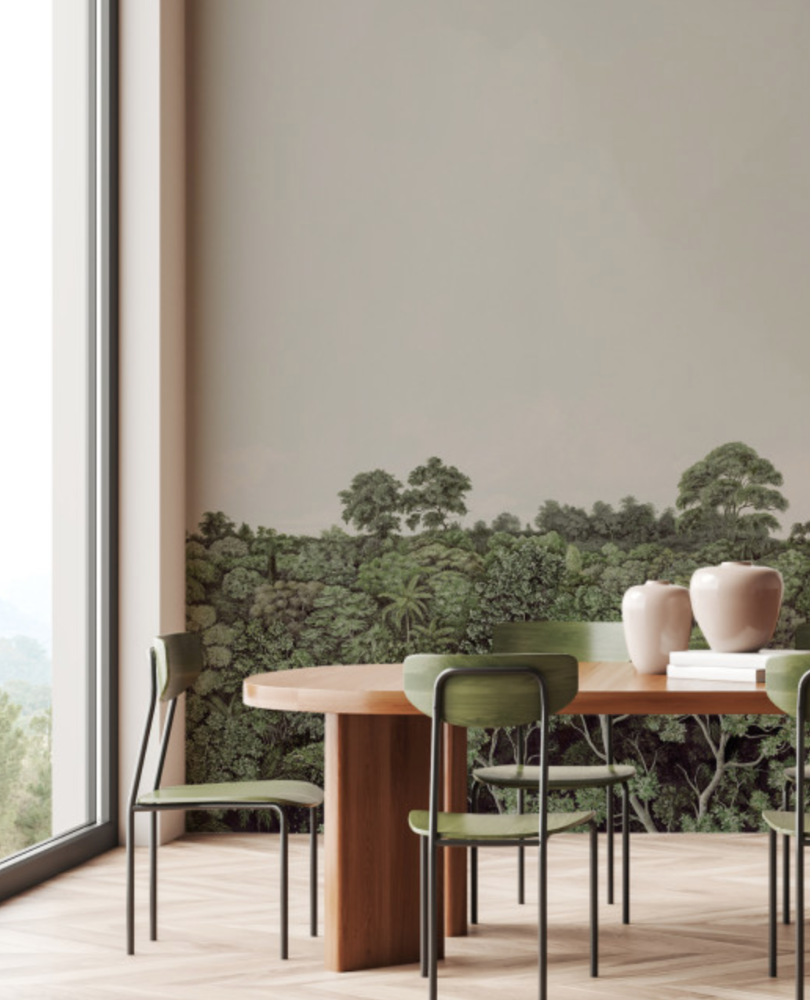
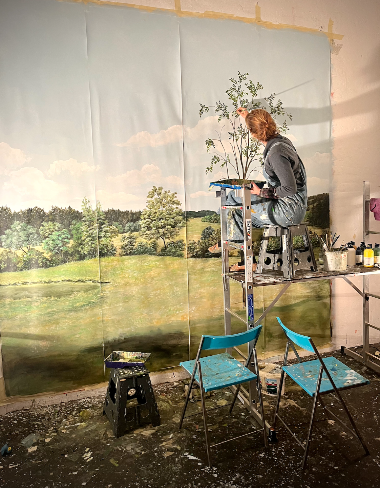
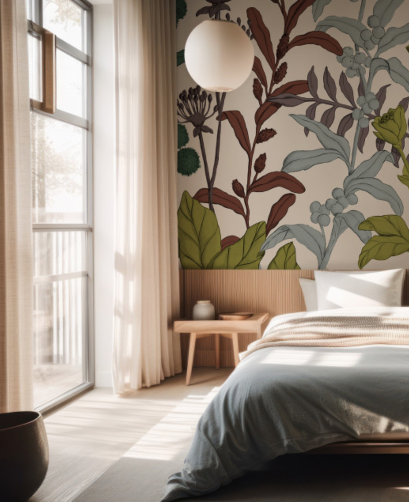

How Marie Works
Each project begins with a conversation about the space, the atmosphere you wish to create, and the story the room might hold. After receiving photographs and the dimensions of the wall or environment in question, Marie meets with you — either in person or online — to explore ideas, inspiration and possibilities.
From this initial exchange, Marie develops a mood board of imagery, colour palettes and visual references that reflect the character of the space and the vision discussed. At this stage, you will also receive an initial project estimate.
Once the artistic direction is confirmed, Marie prepares a concept sketch or colour study to illustrate how the artwork will live within the architecture of the room.
The design is gently refined together until the composition feels balanced and fully aligned with the space, and a timeline for the project is set.
The painting process itself is an exciting stage of transformation. Clients are welcome to be as involved as they wish, following the work as it unfolds. Marie works with carefully selected natural, water-based paints — including emulsion, acrylic, mineral and chalk finishes — which are fast-drying and odour-free so that the space remains comfortable and usable throughout the process.
Designs can be created directly on walls or developed on custom panels produced in Marie's studio, depending on the nature of the project.
When the work is complete, the result is more than a painted wall. It is a quiet transformation of the space — a room that feels more atmospheric, personal and alive.

Process
Each project is developed individually and typically includes:
An initial conversation about the space, atmosphere, and vision
Concept development and sketch design
Refinement of the artwork in dialogue with the client
On-site painting or studio-based work depending on the project

Investment
Marie accepts a limited number of commissions each year.
- Commissions begin at €10,000
- Final investment depends on scale, complexity, and/or installation conditions
- Marie welcomes commissions internationally
- Lead times typically range from 3–6 months, so early booking is recommended
Commissions from
€10,000